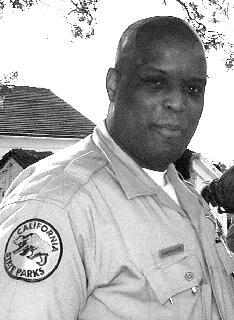

SJAA
Ephemeris
|
SJAA Ephemeris |
Star-B-Que ReportJane Houston |
The 1999 FPOA/AANC Star-B-Que was a big success again this year. It was moved up a month to July 10, since the usual new moon August date competed with the total solar eclipse this year. It was also a chance for all of the FPOA members to meet and welcome our new Fremont Peak State Park ranger, Cameron Bowers. Cameron was joined by his family, too! He'll be residing at the Ranger's house on the weekends. He's already had a chance to meet some of the volunteers who run the telescope, and now he got to meet FPOA members from all over!
|  |
Festivities got under way at about 5:00 PM with the BBQ part of the Star-B-Que. Hot dogs and hamburgers and even chicken burgers were expertly grilled by FPOA members and pot luck items made up the rest of the menu. It was nice to see and meet Jack Borde from Mount Diablo Observatory Association, and several members of the Hercules Public Stargazers. There were astronomers from Monterey, Santa Cruz, San Francisco. A big group from the San Mateo club was there. The East, North and South Bay were well represented. There were non-astronomers who found the information on the internet. Astro friends brought some of their other friends, for a taste of astronomy. Some campers with a cute 6 inch homemade dob set up at the observatory and brought 6 pounds of salmon to cook and share.
Desserts and even some salads had an astronomical theme. SFAA member Dennis Tye brought a star cluster salad, complete with tomato red giants and olive black holes. SMCAS member Bob Black brought a cross-section of Mercury cantelope/strawberry salad.
The desserts entered in the Astronomical Gastronomical contest spanned the spectrum, astronomically speaking. From the ATMs were a pitch-lap pie, with channels cut into the frosting by Akkana Peck from the SJAA. "Channeling frosting is much more difficult than channeling pitch," she remarked. Dob gingerbread cookies were again made by yours truly. Bob Fingerhut's large magellanic flan was bar shaped with scalloped edges. Elisa Fanching's spiral galaxies (a.k.a. cinnamon rollups) and Patty Fanching's dirty snowballs were being consumed quickly. Mike Maiman's M-13 cake looked surprisingly like his last year entry - a spiral galaxy. This was judged by some non-voting consumers as the tastiest entry! Others liked Kathy and Annmarie Garfinkle's Chocolate "Brown Dwarfs" the best.
Taking the cake, so to speak, was the winning entry, EAS/TVS member Debbie Dyke's Apollo 11 anniversary commemorative cake. The lunatics in the crowd marvelled at the accuracy of the lunar maria depicted in gray-blue frosting. Armstrong and Aldrin and the Lunar Module sat right on the Mare Tranquillatis, making one tiny step in the frosting nearly 30 years after the real thing, while the Command Service Module hovered above the cake. The rays of Tycho and the walls of Crisium were accurate. This cake took first prize - tasted good, too!
AANC annual awards for Amateur of the year (Denni Medlock), Commercial business of the year (Crazy Ed Erbeck), and Professional (Dr. Peter Jenniskens) were given out. FPOA member Loren Dynneson received two awards, one from Mary Pass of the State Park Service, and one from the FPOA, in gratitude for his work on urgent and continuing repairs to the observatory.
Many people bought raffle tickets and won Messier Mugs, eyepatches, software, books (Bob Garfinkle donated one of his great starhopping books!), red flashlights, and the great HB Atlas - again donated by Crazy Ed. Ed won a flashlight! Bet he really needs one. A custom made 60mm Plossl eyepiece from Gary Hand of Hands on Optics was raffled off. The winner, a young boy, will be getting his very first telescope this summer. What great timing! This eyepiece has an interesting story: Ron Cardidinale from the San Mateo County Astronomical Society brought it to the Star-B-Cue. Gary Hand from Hands on Optics sent two eyepieces to SMCAS member Budd Hoff, instead of the one he had ordered and paid for. When contacted about the disposition, Gary suggested that the second eyepiece be brought to a star party and donated as an item from Gary Hand of Hands on Optics.
The contests were won by the following: Mike Maiman of the San Mateo County club won the trivia contest, with SJAA Mike Koop close behind. Mike's son David took the artistic award for inventing an asterism using the shape of Fremont Peak. Loren Dynneson's daughter Amy took the grand prize, children's division, of the new asterism contest by fashioning a giraffe out of the familiar star shapes of Cassiopeia, in an activity out of the Project Astro workbook. The kids entries were real interesting! Cats, flowers, snakes, houses, a rocket (with sun and earth nearby), and a sunfish (shark?) were entered. One boy turned in a dobsonian telescope asterism. These kids made asterisms that could compete with some of our constellations!
The asterism competition for the older "children-at-heart" included EAS Don Saito's Pigletius, with an Iridium satellite eye. Also entered was an Ophiuchus coffeepot by SJAA member Morris Jones. SJAA member Mark Taylor submitted the binocular object, a football smiley in Auriga. Maria Ramos submitted "Caterpillago," a caterpillar within Virgo. Apollo 11 cake creator Debbie Dyke submitted an excellent magnifying glass fashioned from Leo. Donn Mukensnable entered his hyper-asterism, the Wizard of ID Dragon, spanning Pegasus and Andromeda, "a harbinger of the Perseids". But the crowd applauded the most for the Millineum Asterism - "two" made from the backwards question mark of Leo, followed by three zero's fashioned in Libra, "would be visible on December 31, 1999", according to winner Andrea Guilan, who selected this because she graduates in 2000.
Tables were then moved and Ernie Piini introduced SJAA member Bob Garfinkle, who gave a twilight talk and slide show about the the moon. Questions kept Bob busy afterwards 'till well after dark. Then the crowd thinned, and the telescopes pointed upwards.
Up at the observatory, there were about 5 scopes set up outside. We had a steady stream of Star-B-Que attendees, other observers and campers. The hot and cloudy afternoon did not promise much of an evening of observing, but the seeing just kept getting better, hour after hour. More than 20 telescopes were set up on telescope row, more in the overlook area, and about 6 were up at the southwest parking lot. Everyone was having a good time showing their favorite objects, chasing difficult targets, or helping the "scopeowner-next-door" with helpful hints. I enjoyed a walk around the various telescope fields and especially enjoyed the comeraderie of being so near to so many new and old friends. Every stop meant a telescopic tour by one of the Star-B-Que ambassadors to the universe. Many newbies were getting advice from their neighbor, not afraid to ask for a look through a telescope, or to ask for and get help locating a never-found-before object. There were more than one getting a first "peak" at the Veil Nebula in Cygnus on this night. A little pointing, a little star-hopping, then a lotta oohhs and ahhhs!
Star-friendly folks were everywhere! Ron Damann and Bob Fingerhut were running the Challenger telescope till 1:00 am when Morris Jones took over. Whenever Ron found an object in the Challenger, I tried to quickly find the same in one of my telescopes set up right out in front of the observatory. This way the guests got to see the same objects through different telescopes. Soon we were looking at the Blue Snowball in Andromeda, the Cats Eye nebula in Draco or the Magnificent cluster in Cassiopeia. NGC 7331 and Stephan's Quintet looked awesome at 370X through the Challenger. A dozen or more dark nebulae in Saggitarius and Ophiuchus were collected like members of a butterfly collection.
Of all the objects we saw and shared with the public my favorites this night were all seen through the Fremont Peak Challenger, with its 30 inches of photon-grabbing power. The Saturn Nebula, NGC 7009 in Aquarius, was stunning at 370X - the central star steady and imposing for all to see easily. The Ansae (or ears) on both sides all showed awesome detail, complex structure, and the incredible color, a greenish vein-filled envelope of stellar material. Just before we shut the observatory for the night at 5:00 a.m., we viewed Jupiter and Saturn at this same 370X through the Challenger. Jupiter's bands were more reddish in color than through the C-14 or the 17.5 inch dob outside. The south equatorial band showed blue festoons and white ovals, which I haven't seen since last year. Saturn was our last object for the morning. And our faithful camper friends left at about this time, after walking up the hill to greet the morning with a view of the crescent moon. An all night Star-B-Que - an all-star day on Fremont Peak!
| Jane Houston; last updated: February 05, 2002 | Prev Next |